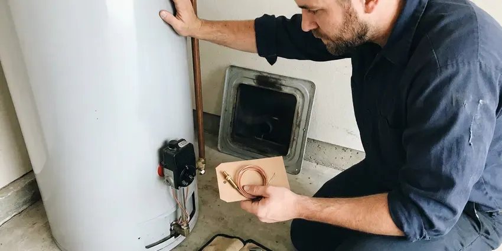

Septic Tank Repair in Murfreesboro, TN
Tough soil conditions can make septic repair tricky in Murfreesboro, TN. Our crew fixes tanks, baffles, pumps and lines with clear options and fair prices.
- Guaranteed Workmanship
- Prompt Septic Tank Service
- Guaranteed Work
- Fast Septic Diagnostics

Facing Septic Tank Trouble in Murfreesboro, TN?
Our skilled technicians are ready to tackle any septic tank problem and keep your system running smoothly.
Expert Septic Tank Repair Services in Murfreesboro, TN
BGV Plumbing is a top choice for septic tank repair in Murfreesboro, TN. We understand the challenges Tennessee properties face with their septic systems, from soil conditions to heavy usage.
Our expertise includes:
- Septic pump and alarm system diagnostics.
- Inlet and outlet baffle, tee and effluent filter replacement
- Clog removal and line jetting for septic lines.

Additional Plumbing Repair Services in Murfreesboro, TN
We offer expert plumbing repair services across Murfreesboro, TN to fix leaks, restore flow, and keep your system running smoothly.


Water Heater Repair in Murfreesboro


Customers
Why Choose BGV Plumbing for Septic Tank Repair in Murfreesboro, TN?
Choosing the right contractor for septic tank repair is important for the life of your system and the health of your property. BGV Plumbing brings years of hands-on experience to every job, ensuring proper diagnosis and repair.
- Code Compliance, All septic tank repairs are performed fully to Tennessee plumbing codes and local Murfreesboro regulations, ensuring safety and legality.
- Whole System View, We inspect from the house cleanout through the tank to the drain field.
- Local Knowledge, Our team has broad experience with the types of septic systems common in Murfreesboro and the surrounding Tennessee region.
Citywide Coverage
No matter where you are located within Murfreesboro, our expert team is available to provide prompt and professional septic tank repair services. We cover the entire area so no homeowner is left with a broken system.
Experienced Team
Our team of licensed plumbers has specialized training in septic system diagnostics and repair. They regularly attend industry seminars to stay updated on the latest techniques and technologies for effective septic tank service.
Safety-First Approach
Repairs follow state on-site wastewater rules and local requirements. We pull permits when needed and keep records you can use for future inspections or a home sale later on.
Trusted Certified Murfreesboro Plumbing Services Professionals
At BGV Plumbing, we take pride in providing licensed, certified plumbing services throughout Murfreesboro, TN. Backed by recognized industry credentials, our experienced plumbers combine technical skill with genuine customer care. Whether it is repair, installation, or maintenance, we follow strict safety and quality standards to deliver lasting results you can trust.
Call Us Now PHCC Plumbing Contractor Recognition
PHCC Plumbing Contractor Recognition Better Business Bureau (BBB) Accreditation
Better Business Bureau (BBB) Accreditation Angi Certified Pro
Angi Certified Pro ISO 9001 Quality Management Certification
ISO 9001 Quality Management CertificationProfessional Septic Tank Repair Services in Murfreesboro, TN
Septic Pipe Repair and Replacement in Murfreesboro, TN
Damaged pipes leading to or from your septic tank can cause backups, leaks and foul odors. These pipes, often made of PVC or cast iron, can crack due to shifting soil, root invasion or age. Much of Tennessee sits on clay soils over limestone, and shallow rock can make digging for sewer and water line repairs slower and harder. BGV Plumbing offers full pipe repair and replacement services, including excavation, precise pipe fitting and backfilling, protecting the integrity of your entire septic system in Murfreesboro, TN.

Commercial Septic System Repair in Murfreesboro, TN
Commercial properties often have larger, more complex septic systems that demand specific repair knowledge. BGV Plumbing provides complete septic tank repair for businesses throughout Murfreesboro, TN, understanding the challenges of high-volume usage and mixed waste streams. We make sure your commercial septic system operates efficiently, preventing costly downtime and maintaining compliance with health regulations.
Effluent Pump Repair in Murfreesboro, TN
Homes with uphill or distant fields often use an effluent pump in a pump tank. Failed pumps, stuck floats or tripped breakers trigger high water alarms. We test the pump, float switches and control panel and replace failed parts. A working alarm gives you warning before sewage backs up.
Cost-Effective Septic Tank Repair in Murfreesboro, TN
The cost of septic tank repair is a big concern for homeowners in Murfreesboro, TN. BGV Plumbing provides clear, upfront pricing after a thorough diagnosis, so you know exactly what to expect. We focus on providing the most cost-effective solution without cutting corners on quality, often offering repair options that extend the life of your existing system rather than pushing for early replacement, saving you money in the long run.
Drain Field Clog Remediation in Murfreesboro
A clogged drain field is a frequent cause of septic system backups and can be a significant issue for homeowners in Murfreesboro. This can be caused by excessive solids, tree root intrusion or soil compaction. We offer professional drain field remediation, which may include hydro-jetting the distribution lines, addressing root infiltration or assessing the soil's percolation capacity to restore proper effluent absorption and prevent future saturation.
Septic Repair Cost Comparison in Murfreesboro, TN
Baffle or tee replacement often costs $300 to $900, and effluent pump replacement typically runs $900 to $2,000. Inlet line repairs range from $800 to $3,000 depending on depth and length. Leach field restoration or replacement can cost $5,000 to $20,000 or more. We help you choose the option that fixes the problem at the best long-term cost.
Emergency Septic Tank Repair in Murfreesboro
Septic emergencies, like severe backups or overflowing tanks, require urgent attention. BGV Plumbing offers emergency septic tank repair services in Murfreesboro to address urgent issues promptly. We understand that these problems can arise at any time, and our fast response team is equipped to diagnose and resolve critical failures, limiting damage and restoring your home's sanitation as quickly as possible.

Septic Baffle and Tee Repair in Murfreesboro
Baffles and tees keep scum and solids in the tank so they do not flow out into the leach field. Concrete baffles crumble from hydrogen sulfide gas, and plastic tees can break off. When they fail, solids clog the field quickly. We replace damaged baffles with durable PVC tees and add an effluent filter where it makes sense.
Septic Tank Repair Near Me in Murfreesboro, TN
When you search for 'septic tank repair near me' in Murfreesboro, TN, you want a local expert who understands your community and can respond quickly. BGV Plumbing is rooted in the Tennessee region, providing personal service that larger companies cannot match. We are proud to be your neighborhood plumbing solution.
When you search for 'septic tank repair near me' in Murfreesboro, TN, BGV Plumbing is your trusted local expert. Our proximity allow us to respond quickly to your septic emergencies and routine service calls.
BGV Plumbing at a Glance
- Fully licensed plumbing team covering Murfreesboro, TN
- 24/7 emergency service with same-day scheduling
- Upfront, flat-rate pricing before work begins
- 4.9-star rated by 932+ Tennessee customers
Murfreesboro Map
Murfreesboro Information
- Population
- 165,430
- Area codes
- 615/931/629
- Service area
- Murfreesboro and communities within 40 miles
- Nearby
- Smyrna, Franklin, Spring Hill, Nashville
Clay and shallow rock can make drain fields difficult to place, so some homes rely on alternative or engineered septic designs. Timely septic repair around Murfreesboro, TN prevents backups and expensive field replacement.
Expert Services
Trust our professionals for reliable BGV Plumbing solutions in Murfreesboro, TN.
Our Specialized Plumbing Services in Murfreesboro, TN
At BGV Plumbing, we provide a complete range of plumbing services across Murfreesboro, TN. From leak detection to full system installations, our team ensures fast, precise, and affordable service for both residential and commercial properties. Explore our core services below:


How Our Septic Tank Repair Process Works in Murfreesboro, TN
Here is how we take your septic system from trouble to working right again.
Request a Quote
Call (615) 518-0893 and describe your symptoms, such as slow drains, alarms or odors. Let us know when the tank was last pumped if you know.
Inspect and Locate
We locate and open the tank, check baffles, filters and pumps and camera the lines as needed. You get written repair options with prices.
Repair and Document
We complete the repair, test flow through the system and close everything up safely. You receive documentation of the work for your records.
Frequently Asked Questions About Septic Tank Repair in Murfreesboro
Septic tank repair costs in Murfreesboro, TN vary widely depending on the issue. Minor repairs like clearing a clog might range from $300 to $700, while major repairs such as drain field replacement can cost $5,000 to $15,000 or more. We provide a detailed estimate after diagnosing the problem.
Sometimes. Jetting lines, replacing a distribution box or resting the field can restore it. If the soil is sealed, replacement may be the only lasting fix.
The length of septic tank repair depends on the complexity of the issue. Simple repairs like a baffle replacement might take a few hours, while more extensive work such as drain field repair or pipe replacement could take one to several days, especially if excavation is involved. Our technicians will provide an expected timeline during the diagnosis.
Most additives are not needed for a healthy system. Regular pumping, water conservation and keeping grease and wipes out of drains do far more.
If your septic tank is overflowing, immediately stop all water use in your home to prevent further spillage. Avoid contact with the wastewater and call BGV Plumbing at (615) 518-0893 for emergency service. We will dispatch a technician to assess the situation and begin repairs as quickly as possible.
Key signs include slow drains, gurgling toilets, sewage odors inside or outside your home, oddly lush or soggy spots in your yard near the septic tank or drain field, and sewage backups into your home. If you notice any of these, it is crucial to call BGV Plumbing promptly to prevent further damage.
Soil type has a big effect on septic system performance. Much of Tennessee sits on clay soils over limestone, and shallow rock can make digging for sewer and water line repairs slower and harder. Clay soils drain slowly, making drain fields more susceptible to failure, while very sandy or rocky ground can pass effluent too quickly. Our plumbers understand these local soil conditions.
The duration of a septic tank repair depends on the complexity of the issue. Simple clog removals might take a few hours, while more extensive repairs like drain field work could span several days. We will provide an estimated timeline during our first assessment.
What People Are Saying About Our Plumbing Experts?

James P.
Our commercial plumbing system had a leak under the sink, and BGV Plumbing handled it professionally. The plumbers arrived quickly and restored everything without disruption to our customers.
Commercial Plumbing · Nashville, TN
Emily R.
I called BGV Plumbing for plumbing repair, and the technician was fast, polite, and thorough. They explained the problem clearly and fixed it the same day. I will definitely hire them again. Highly recommended!
Plumbing Repair · Nashville, TNRobert G.
The trenchless sewer replacement saved our front yard. They walked us through the camera inspection footage first so we knew exactly what we were paying for.
Sewer Line Replacement · Murfreesboro, TN
Daniel K.
A pipe burst at 11 pm and they actually answered. The plumber showed up within the hour, shut everything down, and had us back to normal the next morning. Could not ask for more.
Emergency Plumbing · Smyrna, TN
Patricia H.
We had a slab leak that two other companies could not find. BGV Plumbing located it in under an hour, explained our options, and the price matched the quote to the dollar.
Slab Leak Repair · Murfreesboro, TN
Laura S.
I scheduled a water heater replacement, and the team made the process smooth and affordable. The new unit works perfectly, and they cleaned up after completing the job.
Water Heater Replacement · Hendersonville, TN